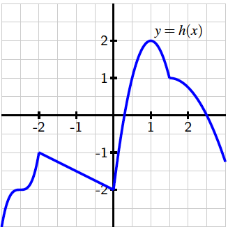

The domain of the function \(h\) graphed below is all real numbers, and all of its extreme values occur when \(-3\lt x\lt 3\text{.}\) Use the graph to answer the following questions.

Identify all of the values of \(c\) for which \(h(c)\) is a local maximum of \(h\text{.}\) If there is more than one value, enter the values as a comma-separated list. If there are none, enter DNE.
values:
Identify all of the values of \(c\) for which \(h(c)\) is a local minimum of \(h\text{.}\) If there is more than one value, enter the values as a comma-separated list. If there are none, enter DNE.
values:
Does \(h\) have a global maximum? If so, enter the value of its global maximum. If there is no global maximum, enter DNE.
Global maximum value:
Does \(h\) have a global minimum? If so, enter the value of its global minimum. If there is no global minimum, enter DNE.
Global maximum value:
Identify all of the values of \(c\) for which \(h'(c)=0\text{.}\) If there is more than one value, enter the values as a comma-separated list. If there are none, enter DNE.
values:
Identify all of the values of \(c\) for which \(h'(c)\) does not exist. If there is more than one value, enter the values as a comma-separated list. If there are none, enter DNE.
values:
True or false: every relative maximum and minimum of
\(h\) occurs at a point where
\(h'(c)\) is either zero or does not exist.
True or false: at every point where
\(h'(c)\) is zero or does not exist,
\(h\) has a relative maximum or minimum.